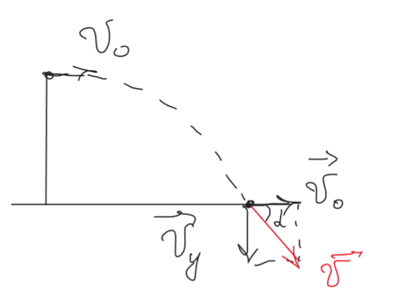
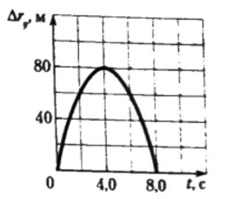
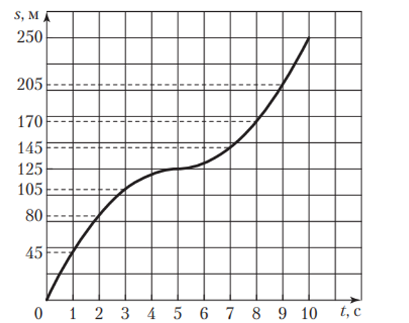
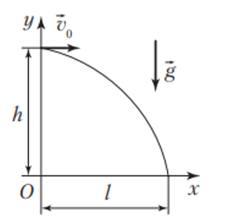
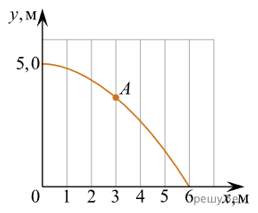

Если тело бросить вертикально вверх с высоты $h = 20\text{ м}$ со скоростью, модуль которой $v_0 = 4{,}0\text{ м/с}$, то через время $t = 2{,}0\text{ с}$ после начала движения тело окажется на высоте:
Используем уравнение координаты, так как тело брошено с высоты и меняет направление движения. Оно сразу показывает итоговую высоту над землей.
За третью секунду свободного падения тело проходит путь, равный:
Закон Галилея гласит: пути, проходимые телом при свободном падении (без начальной скорости) за последовательные равные промежутки времени, относятся как последовательные нечетные числа:
Камень падает в ущелье. Через время $t = 6{,}00\text{ с}$ слышен звук удара камня о землю. Если модуль скорости звука $v = 330\text{ м/с}$, то глубина ущелья составляет:
Свяжем глубину ущелья $h$ через уравнения движения камня и звука:
Для камня: $h = \frac{gt_1^2}{2}$
Для звука: $h = v \cdot t_2$
Так как общее время $t = t_1 + t_2 = 6\text{ с}$, выразим время движения звука: $t_2 = t - t_1$.
С высоты $h_1 = 13\text{ м}$ без начальной скорости начинает падать сосулька, оторвавшаяся от крыши дома. В момент времени $t = 1{,}0\text{ с}$ сосулька окажется на высоте $h_2$, равной:
Высота $h_2 = h_1 - \Delta r = 8{,}0\text{ м}$, где модуль перемещения сосульки:
$$\Delta r = \frac{gt^2}{2} = 5{,}0\text{ м}.$$
Ответ: вариант 4 (8,0 м).
Задача 6
Парашютист совершил прыжок с высоты $h$ над поверхностью Земли без начальной вертикальной скорости. В течение промежутка времени $\Delta t_1 = 4{,}0\text{ с}$ парашютист свободно падал, затем парашют раскрылся, и в течение пренебрежимо малого промежутка времени скорость парашютиста уменьшилась. Дальнейшее снижение парашютиста до момента приземления происходило в течение промежутка времени $\Delta t_2 = 80{,}0\text{ с}$ с постоянной вертикальной скоростью, модуль которой $v = 36{,}0\text{ }\frac{\text{км}}{\text{ч}}$. Высота $h$, с которой парашютист совершил прыжок, равна ... м.
Введите высоту $h$ в метрах ($\text{м}$):
За 4 секунды свободного падения парашютист пролетел $\frac{g\Delta t_1^2}{2} = \frac{10 \cdot 4^2}{2} = 80\text{ м}$. За 80 секунд с постоянной скоростью $36\text{ км/ч} = 10\text{ м/с}$ парашютист пролетел $\Delta t_2 \cdot v = 80 \cdot 10 = 800\text{ м}$. Поэтому суммарная высота равна 880 м.
Ответ: 880.
Задача 7
Тело, которое падало без начальной скорости ($v_0 = 0\text{ }\frac{\text{м}}{\text{с}}$) с некоторой высоты, за последнюю секунду движения прошло путь $s = 35\text{ м}$. Высота $h$, с которой тело упало, равна ... м.
Введите высоту $h$ в метрах ($\text{м}$):
Координата тела, движущегося равноускоренно без начальной скорости, зависит от времени по закону $x(t) = \frac{gt^2}{2} = 5t^2$. За последнюю секунду тело прошло путь 35 м:
Таким образом, время падения составляет $T = 4\text{ с}$, а высота падения равна $h = 5T^2 = 80\text{ м}$.
Ответ: 80.
Задача 8
С башни в горизонтальном направлении бросили камень с начальной скоростью, модуль которой $v_0 = 20\text{ м/с}$. Если непосредственно перед падением на землю скорость камня была направлена под углом $\alpha = 45^\circ$ к горизонту, то камень упал на расстоянии $s$ от основания башни равном ... м.

Введите расстояние $s$ в метрах ($\text{м}$):
При параболическом движении камня в поле тяжести Земли, горизонтальная составляющая его скорости не меняется, а вертикальная изменяется со временем как $v_y = gt$.
Так как скорость камня направлена под углом $45^\circ$ перед моментом падения на Землю, то $v_y = v_x = v_0$.
Найдем время полета камня:
$$t = \frac{v_y}{g} = \frac{v_0}{g}.$$
Тогда камень упадет от башни на расстоянии:
$$s = v_x t = \frac{v_0^2}{g} = 40\text{ м}.$$
Ответ: 40 м.
Задача 9
На рисунке 16 показан график зависимости проекции на вертикальную ось $Oy$ перемещения $\Delta r_y$ тела, брошенного вертикально вверх, от времени $t$. Модуль начальной скорости $v_0$ движения тела равен:

Рис. 16
Из графика (рис. 16) следует, что максимальной высоты подъема $h_{\text{max}} = \Delta r = 80\text{ м}$ тело достигает в момент времени $t = 4{,}0\text{ с}$. Из уравнения $\Delta r = v_0 t - \frac{gt^2}{2}$ найдем ответ: $v_0 = 40\text{ }\frac{\text{м}}{\text{с}}$.
Ответ: вариант 4 (40 м/с).
Задача 10
Из точки А, находящейся над поверхностью земли, отпустили без начальной скорости маленький шарик, который падал на землю в течение времени $t_1 = 4{,}0\text{ с}$. Если из той же точки А шарик бросить вертикально вверх со скоростью, модуль которой $v_0 = 30\text{ }\frac{\text{м}}{\text{с}}$, то он будет падать на землю в течение времени $t_2$, равного:
СИ:
$t_1 = 4{,}0\text{ с}$
$v_0 = 30\text{ м/с}$
$g = 10\text{ м/с}^2$
1. Первый случай (свободное падение без начальной скорости):
Шарик падает с высоты $h$ за время $t_1$. Запишем формулу пути:
Второй случай (бросок вертикально вверх):
Направим координатную ось $Y$ вертикально вверх, совместив начало координат ($y = 0$) с поверхностью земли. Тогда начальная координата шарика $y_0 = h = 80\text{ м}$, начальная скорость $v_{0y} = v_0 = 30\text{ м/с}$, а ускорение $a_y = -g = -10\text{ м/с}^2$. Уравнение движения шарика имеет вид:
Тело свободно падало с некоторой высоты без начальной скорости. Если в момент удара о землю модуль скорости тела $v = 70\text{ }\frac{\text{м}}{\text{с}}$, то за последнюю секунду движения тело прошло путь $s$, равный:
Время падения тела $t_0 = \frac{v}{g} = 7{,}0\text{ с}$. Высота, с которой упало тело, $h_0 = \frac{gt_0^2}{2} = 245\text{ м}$. За промежуток времени $\Delta t = 6{,}0\text{ с}$, считая от начала падения, модуль перемещения тела $\Delta r = \frac{g\Delta t^2}{2} = 180\text{ м}$. Путь, который прошло тело за последнюю секунду:
$$s = h_0 - \Delta r = 65\text{ м}.$$
Ответ: вариант 4 (65 м).
Задача 12
На рисунке 18 показан график зависимости пути $s$ шарика, брошенного вертикально вверх с поверхности земли, от времени $t$. Модуль скорости $v$ движения шарика в момент времени $t = 8\text{ с}$ равен:

Рис. 18
Из графика (рис. 18) следует, что шарик достиг верхней точки траектории в момент времени $t_1 = 5\text{ с}$ и после этого падал вниз. В момент времени $t = 8\text{ с}$ модуль скорости движения шарика:
За последнюю секунду свободно падающее тело прошло путь $h_1 = 45\text{ м}$. Если начальная скорость движения тела, модуль которой $v_0 = 20\text{ }\frac{\text{м}}{\text{с}}$, направлена вертикально вниз, то оно падало в течение промежутка времени $\Delta t$, равного:
Найдем скорость $v_1$ в начале последней секунды. Путь за эту секунду (время равно 1 с) равен:
Полное время падения $\Delta t$ — это время до последней секунды плюс сама эта секунда:
$$\Delta t = 2 + 1 = 3{,}0\text{ с}$$
Ответ: вариант 1 (3,0 с).
Задача 14
Два камня находятся на одной вертикальной линии на расстоянии $h = 20\text{ м}$ друг от друга. В некоторый момент времени верхний камень бросают вертикально вниз со скоростью, модуль которой $v_{01} = 2{,}0\text{ }\frac{\text{м}}{\text{с}}$, а нижний камень отпускают без начальной скорости. Промежуток времени $\Delta t$, через который камни столкнутся, равен:
Будем считать ось $Oy$ направленной вертикально вниз. Запишем уравнения движения верхнего и нижнего камней: $y_1 = v_{01}\Delta t + \frac{g\Delta t^2}{2}$, $y_2 = h + \frac{g\Delta t^2}{2}$. Так как в момент столкновения камней $y_1 = y_2$, то $v_{01}\Delta t + \frac{g\Delta t^2}{2} = h + \frac{g\Delta t^2}{2}$. Отсюда следует ответ:
$$\Delta t = \frac{h}{v_{01}} = 10\text{ с}.$$
Ответ: вариант 5 (10 с).
Задача 15
Если тело свободно падает без начальной скорости с высоты $h = 180\text{ м}$, то средняя скорость движения тела $\langle v \rangle$ на последнем участке пути длиной $s = 100\text{ м}$ равна:
Время падения тела $t = \sqrt{\frac{2h}{g}} = 6{,}0\text{ с}$. Время падения тела на первом участке пути $t_1 = \sqrt{\frac{2(h - s)}{g}} = 4{,}0\text{ с}$; на последнем участке пути — $\Delta t = t - t_1 = 2{,}0\text{ с}$. Искомая средняя скорость пути:
$$\langle v \rangle = \frac{s}{\Delta t} = 50\text{ }\frac{\text{м}}{\text{с}}.$$
Ответ: вариант 5 (50 м/с).
Задача 16
Небольшой шарик бросили горизонтально с высоты $h$. Если шарик упал на поверхность через промежуток времени $\Delta t = 3{,}0\text{ с}$ со скоростью, модуль которой $v = 34\text{ }\frac{\text{м}}{\text{с}}$, то модуль начальной скорости шарика $v_0$ равен ... м/с.
Введите модуль начальной скорости в метрах в секунду ($\text{м/с}$):
При горизонтальном броске скорость тела в любой момент времени складывается из двух перпендикулярных компонентов:
Горизонтальная скорость $v_x = v_0$ (остается неизменной).
Вертикальная скорость $v_y = g \cdot \Delta t$ (растет из-за свободного падения).
Используя ускорение свободного падения $g \approx 10\text{ м/с}^2$ и время падения $\Delta t = 3{,}0\text{ с}$:
Небольшой шарик бросили горизонтально с высоты $h = 80\text{ см}$, с начальной скоростью, модуль которой $v_0 = 3{,}5\text{ }\frac{\text{м}}{\text{с}}$. Дальность полёта $L$ тела равна ... дм.
Введите дальность полёта в дециметрах ($\text{дм}$):
При горизонтальном броске движение по вертикали — это свободное падение без начальной скорости:
Два тела падают с одинаковой высоты $h = 20\text{ м}$: одно без начальной скорости, а другое — с начальной скоростью $\vec{v}_0$, направленной вертикально вниз. Если промежутки времени падения тел отличаются в $k = 2{,}0$ раза, то модуль начальной скорости $v_0$ второго тела равен ... м/с.
Введите модуль начальной скорости в метрах в секунду ($\text{м/с}$):
Первое тело (свободное падение без начальной скорости):
Оно летит дольше всего. Найдем его время падения $t_1$:
С высоты $h = 50\text{ м}$ сорвалась еловая шишка и свободно падала вниз. Если на середине пути шишка ударилась о выступающую ветку ели и при этом ее скорость уменьшилась в два раза, то в момент касания земли модуль скорости $v$ движения шишки равен ... м/с.
Введите модуль скорости в метрах в секунду ($\text{м/с}$):
Из уравнения $\frac{h}{2} = \frac{v_1^2}{2g}$ найдем модуль скорости шишки на середине пути (перед ударом о ветку): $v_1 = \sqrt{hg}$. Сразу после удара модуль скорости шишки стал $v_2 = \frac{v_1}{2}$. Из формулы $\frac{h}{2} = \frac{v^2 - v_2^2}{2g}$ выразим модуль скорости шишки в момент касания земли: $v = \sqrt{hg + v_2^2}$. Из записанных уравнений найдем ответ:
Комок снега бросили вертикально вверх с начальной скоростью $v_0 = 16\text{ }\frac{\text{м}}{\text{с}}$. Когда он достиг верхней точки полета, из той же начальной точки и с такой же начальной скоростью бросили вверх второй комок снега. Высота $h$, на которой, считая от точки бросания, комки снега встретятся, равна ... дм.
Введите высоту в дециметрах ($\text{дм}$):
Найдем время подъема $\tau$ первого комка до верхней точки:
Если дальность полета тела, брошенного в горизонтальном направлении со скоростью, модуль которой $v_0 = 15\text{ }\frac{\text{м}}{\text{с}}$, равна высоте бросания, то высота $h$, с которой брошено тело, равна ... м.
Введите высоту в метрах ($\text{м}$):
На рисунке 396 показана траектория движения тела. Высота, с которой брошено тело, $h = \frac{gt^2}{2}$, где $t$ — время падения. Дальность полета $l = v_0 t$. Учитывая, что $h = l$, найдем ответ:
$$h = 45\text{ м}.$$

Рис. 396
Ответ: 45.
Задача 22
Если камень, брошенный горизонтально с некоторой высоты со скоростью, модуль которой $v_0 = 54\text{ }\frac{\text{км}}{\text{ч}}$, упал на землю через промежуток времени $\Delta t = 2{,}0\text{ с}$, то модуль скорости $v$ камня в момент касания земли равен ... м/с.
Введите модуль скорости в метрах в секунду ($\text{м/с}$):
Проекции скорости $\vec{v}$ (рис. 397) на оси $Ox$ и $Oy$ соответственно $v_x = v_0$ и $v_y = -g\Delta t$. Из прямоугольного треугольника следует:
С башни с высоты $h = 16{,}2\text{ м}$ в горизонтальном направлении бросили мяч. Если модуль перемещения мяча в момент падения на горизонтальную поверхность земли $\Delta r = 27\text{ м}$, то модуль начальной скорости $v_0$ движения мяча равен ... м/с.
Введите модуль начальной скорости в метрах в секунду ($\text{м/с}$):
Из рисунка 399 следует: дальность полета мяча $l = \sqrt{(\Delta r)^2 - h^2} = 21{,}6\text{ м}$. Время его падения $t = \sqrt{\frac{2h}{g}} = 1{,}8\text{ с}$. Модуль начальной скорости, сообщенной мячу:
Лифт начал подниматься с ускорением, модуль которого $a = 1{,}2\text{ м/с}^2$. Когда модуль скорости движения достиг $V = 2{,}0\text{ м/с}$, с потолка кабины лифта оторвался болт. Если высота кабины $h = 2{,}4\text{ м}$, то модуль перемещения $\Delta r$ болта относительно поверхности Земли за время его движения в лифте равен ... см. Ответ округлите до целых.
Введите модуль перемещения в сантиметрах ($\text{см}$):
Во время падения болта лифт проходит некоторое расстояние, за счёт чего болт переместится относительно Земли на расстояние меньшее, чем высота кабины лифта. Относительно Земли болт движется с ускорением $g$, а вот относительно лифта его ускорение будет $g + a$. Начальная скорость болта относительно лифта равна нулю, поэтому время падения можно найти из уравнения:
Относительно Земли болт движется с начальной скоростью, которая направлена вверх и равна $V$. Таким образом, за время падения в движущемся лифте болт переместится относительно Земли на расстояние, по модулю равное:
Из одной точки с высоты $H$ бросили два тела в противоположные стороны. Начальные скорости тел направлены горизонтально, а их модули $v_1 = 5\text{ м/с}$ и $v_2 = 10\text{ м/с}$. Если расстояние между точками падения тел на горизонтальной поверхности земли $L = 45\text{ м}$, то чему равна высота $H$? Ответ приведите в метрах.
Введите высоту $H$ в метрах ($\text{м}$):
При движении тела, брошенного горизонтально, по оси $Ox$ движение равномерное, по оси $Oy$ — равноускоренное без начальной скорости с ускорением свободного падения. Поэтому дальность полета каждого тела равна:
$$L_1 = v_1 t; \quad L_2 = v_2 t.$$
Расстояние между точками падения $L = L_1 + L_2$. Отсюда время падения тел:
Тело бросили горизонтально с высоты $h = 5{,}0\text{ м}$ (см. рис.). В точке $A$ модуль мгновенной скорости $v$ тела равен ... дм/с. Ответ запишите в дециметрах за секунду, округлив до целых.

Введите модуль мгновенной скорости в дециметрах в секунду ($\text{дм/с}$):
Из формулы $h = \frac{gt^2}{2}$ выразим время падения тела:
Тогда время движения тела до точки $A$ было равно $t_1 = 0{,}5\text{ с}$.
В точке $A$ проекции скорости $v_x = v_0$, $v_y = gt_1 = 10 \cdot 0{,}5 = 5\text{ м/с}$.
Тогда модуль мгновенной скорости в данной точке равен: